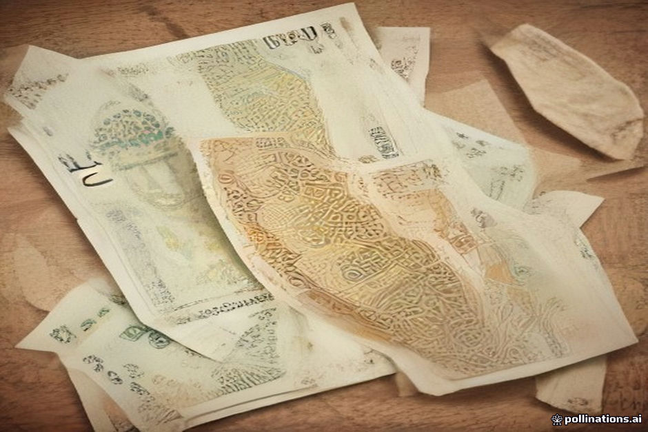

Once you cross the Tizi n'Tichka pass into the High Atlas mountains, card terminals become rare and unreliable. While pre-booked tour fees cover fuel and accommodation, day-to-day spending—roadside lunches, tips for local guides, bottled water, and village crafts—requires physical Moroccan Dirhams (MAD).
Relying on card payments outside major towns like Ouarzazate is a mistake. Bank network outages happen frequently in rural valleys like Dades and Todra. This guide details where ATMs reliably work along the route and breaks down exact cash estimates so you avoid running dry before reaching Erg Chebbi.
Reliable ATM Stops Between Marrakesh and Merzouga
Do not wait until you are deep in the High Atlas to pull cash. Your primary window for withdrawal is before leaving Marrakesh or at key provincial hubs along the way. Bank branches attached to major financial institutions like Attijariwafa Bank, Banque Populaire, and BMCE are the most reliable options for foreign cards.
Ouarzazate serves as your safest mid-route hub. Tinghir also has functional ATMs near the central square before you head into Todra Gorge. Beyond Tinghir, cash points become scarce, and machines in Erfoud or Rissani frequently run out of bills on weekends or market days.
- Marrakesh Medina/Gueliz: Withdraw fully before your morning departure.
- Ouarzazate: Best mid-route hub with multiple international bank ATMs.
- Tinghir: Reliable backup before entering the Todra Valley.
- Merzouga village: Has limited ATMs that regularly run out of cash.
Roadside Meal Costs and Daily Incidentals
Roadside dining spots along the main route cater largely to travelers and present set menus or tagine options. Expect to pay between 80 MAD and 140 MAD per person for lunch, excluding drinks. Small incidentals like 1.5L bottled water cost around 10 to 15 MAD at village shops.
For details on menu expectations and hygiene along the drive, read our notes on /blog-roadside-dining-and-food-hygiene-marrakesh-to-merzouga. Keeping 20 MAD and 50 MAD notes accessible will make paying at modest roadside stands seamless, as shopkeepers rarely have change for 200 MAD bills.
Tipping Guidelines for Drivers, Guides, and Staff
Tipping is customary across Morocco's hospitality industry. Budgeting for gratuities in advance prevents awkward cash crunches at the end of your trip. For localized historical site tours, such as a walking guide at Ait Ben Haddou, 50 to 100 MAD per group for an hour-long tour is customary.
For your dedicated tour driver, 150 to 250 MAD per day total from your group is typical for attentive service across a multi-day trip. At desert camps, staff usually operate a shared tip box; 100 to 200 MAD total per room or tent covers the hospitality team. You can review our full breakdown in the /blog-morocco-desert-tour-tipping-guide.
Budgeting for Souvenirs, Carpets, and Crafts
The route traverses several artisanal regions: rose water products in Kelaat M'Gouna, silver crafts near Ouarzazate, and woven rugs in the High Atlas and desert communities. While established carpet cooperatives accept credit cards for high-value items, smaller village vendors operate strictly in cash.
Avoid over-withdrawing cash purely for impulse buying. Established merchants offering high-ticket items like authentic rugs can take card payments or arrange international shipping. Save your paper cash for small items like headscarves (50–100 MAD), spices (30–80 MAD), or tea stops.
| Expense Category | Estimated Cost (MAD) | Payment Method |
|---|---|---|
| Roadside Lunch (per person) | 80 – 140 MAD | Cash Only |
| Water & Roadside Snacks (per day) | 20 – 40 MAD | Cash Only |
| Local Site Guide (per group tour) | 50 – 100 MAD | Cash Only |
| Private Driver Tip (per day/group) | 150 – 250 MAD | Cash Only |
| Desert Camp Staff Tip (per night) | 100 – 200 MAD | Cash Only |
| Small Crafts & Scarves | 50 – 200 MAD | Cash / Card for large items |

Illustration, not a photograph — for the real thing, you'll have to stand on the ridge yourself.
Quick answers
A few follow-up questions travelers ask about this.
Can I pay for roadside lunches or tips using Euros or US Dollars?
While drivers and hotel managers may accept Euros in an emergency, roadside restaurants, small stores, and local village guides strictly require Moroccan Dirhams. Always carry local currency.
How much total cash should two people carry for a 3-day Sahara trip?
We suggest drawing roughly 2,000 to 2,500 MAD (approx. $200–$250 USD) per couple before leaving Marrakesh. This comfortably covers all lunches, tips, snacks, and minor purchases.
Do luxury camps at Erg Chebbi accept credit cards?
Some high-end permanent camps have card terminals for extra drinks, but cellular connections in the dunes are unpredictable. It is always safer to settle extra camp expenses in cash.
Planning your own route?
Tell us your dates and what matters to you — we'll answer with a straight recommendation, not a brochure.
Send an inquiry See the itineraries